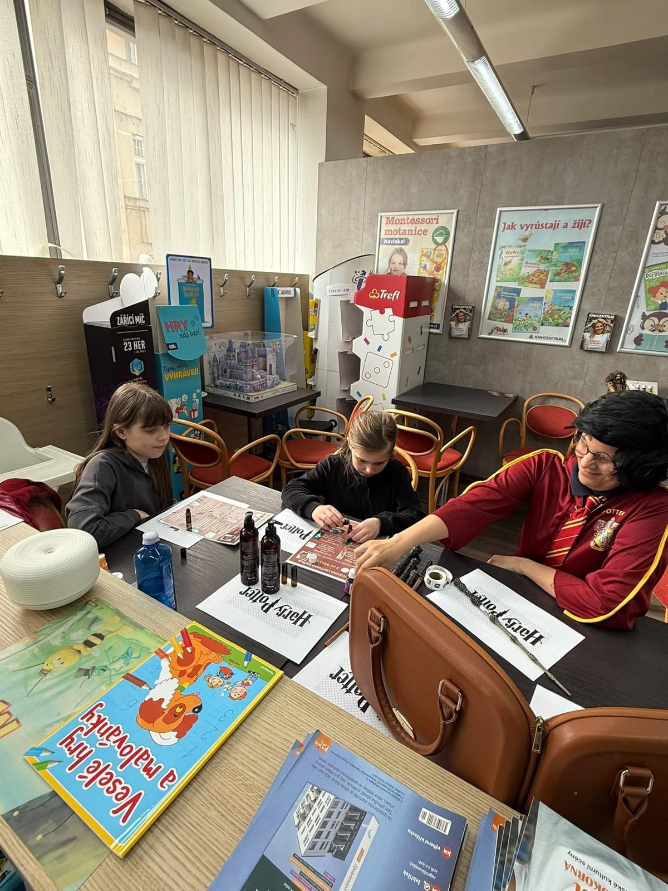
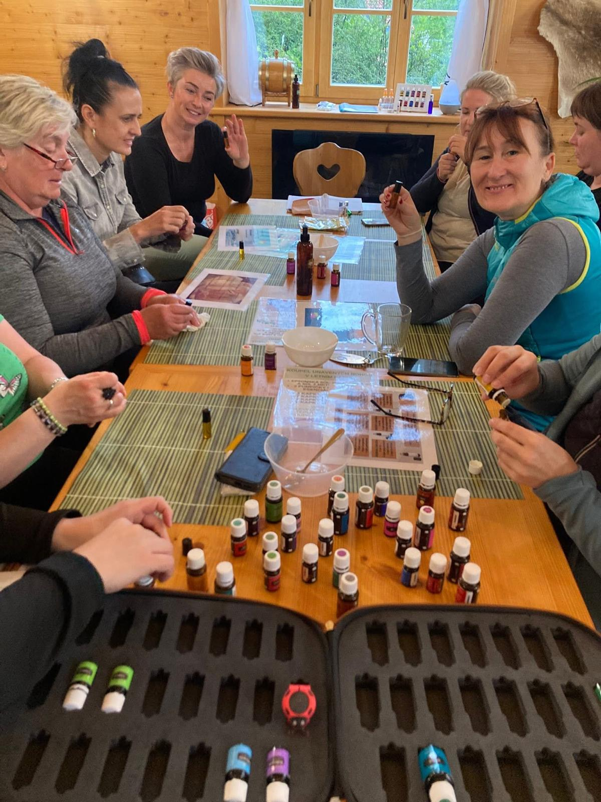
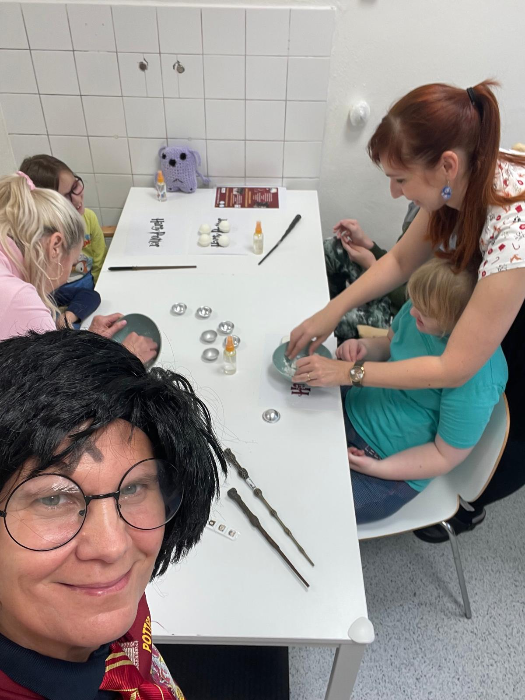
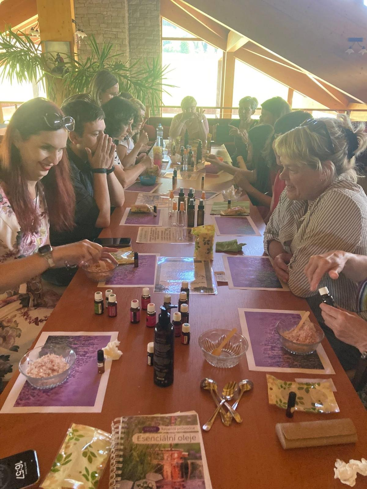

Co nabízím
- Základní a pokračovací workshopy
- LOW TOX domácnost
- Workshopy pro děti v kouzelnickém stylu Harryho Pottera
- Workshopy pro handicapované děti i dospělé
- 10týdenní kurz „AROMATERAPEUTICKÉ TVOŘENÍ"
Aromaterapie
Zážitkové programy pro děti i dospělé.
Základní aromaterapeutický workshop je ideálním vstupem do světa přírodních vůní a jejich blahodárných účinků. Seznámíte se s principy aromaterapie, naučíte se bezpečně používat esenciální oleje a pochopíte jejich vliv na tělo, mysl i emoce.
Workshop je veden zážitkovou a srozumitelnou formou, bez nutnosti předchozích znalostí. Součástí je i praktická část, během které si vytvoříte vlastní aromaterapeutický produkt na míru.
Workshop je vhodný pro všechny, kteří:
Pokračovací workshop je určen pro ty, kteří už mají základní zkušenosti s aromaterapií a chtějí své znalosti prohloubit. Zaměříme se na hlubší pochopení účinků esenciálních olejů a jejich cílené využití v různých životních situacích.
Věnovat se budeme také práci s emocemi, podporou psychické pohody a individuálním potřebám účastníků. Důraz je kladen na praxi, osobní prožitek a sdílení zkušeností.
Workshop je vhodný pro ty, kteří:
Workshop zaměřený na LOW TOX domácnost nabízí praktický a srozumitelný pohled na to, jak snížit množství chemických látek v každodenním životě a nahradit je přírodními, šetrnými alternativami. Dotkneme se aromaterapie a její podstaty ve vztahu k LOW TOX domácnosti.
Naučíte se, jak pomocí esenciálních olejů a jednoduchých běžně dostupných surovin vytvořit bezpečnou a zdravější domácnost - bez zbytečné chemie, s respektem k tělu i životnímu prostředí. Součástí workshopu je výroba vlastních přírodních produktů, které si odnesete domů.
Workshop je vhodný pro všechny, kteří:
Vstupte s dětmi do světa fantazie, vůní a kouzel! Aromaterapeutické workshopy inspirované kouzelnickým světem probouzí dětskou představivost, podporují smyslové vnímání a přirozenou cestou seznamují děti s aromaterapií, s budováním imunity, soustředěním, sladkým spánkem a jinými oblastmi dětského života.
Děti se hravou formou učí poznávat vůně, jejich účinky a kouzelnou sílu přírody. V bezpečném a laskavém prostředí si vyzkouší výrobu vlastních lektvarů, elixírů či koupelových solí, které si nadšeně odnesou domů. Učitelem jim není nikdo jiný než Harry.
Součásti workshopu je také povídání o kouzelnickém světě bradavickém, kouzelnický kvíz a zábava s Harrym.
Workshop rozvíjí:
Tyto jedinečné workshopy jsou vytvářeny s důrazem na individualitu, respekt a bezpečný prožitek. Kouzelnická tematika pomáhá uvolnit atmosféru, odbourat napětí a otevřít prostor pro radost, hru a tvoření - bez tlaku na výkon.
Aromaterapie zde slouží jako jemný nástroj podpory psychické pohody, smyslového vnímání a emocí. Program je vždy přizpůsoben možnostem a potřebám účastníků, ať už dětí nebo dospělých.
Workshopy přináší:
Desetitýdenní kurz Aromaterapeutické tvoření je určen všem, kteří chtějí proniknout do aromaterapie hlouběji a propojit teorii s praktickým využitím v každodenním životě.
Kurz nabízí systematické a srozumitelné vedení světem esenciálních olejů, jejich účinků a bezpečného používání. Každé setkání je obohaceno o praktickou část, během které si účastníci vyrábějí vlastní přírodní produkty - od olejových směsí až po produkty pro domácnost a osobní péči.
Kurz je vhodný pro:



